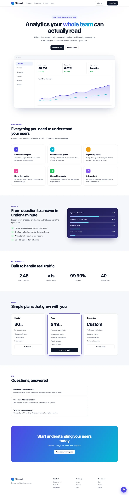
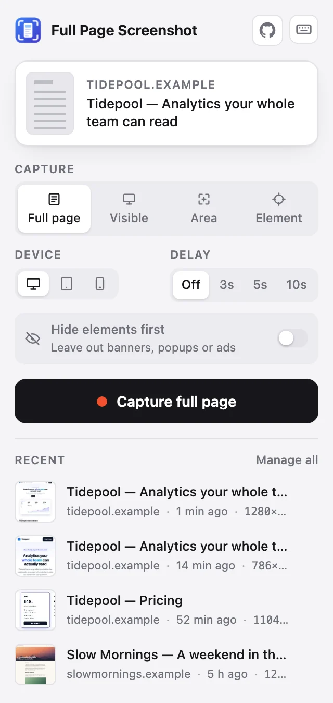
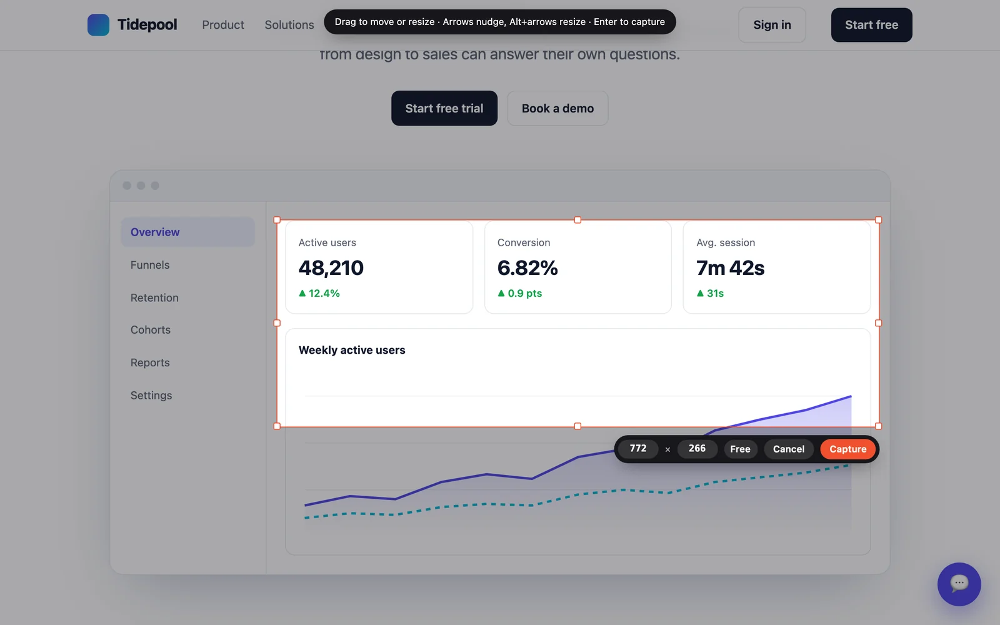
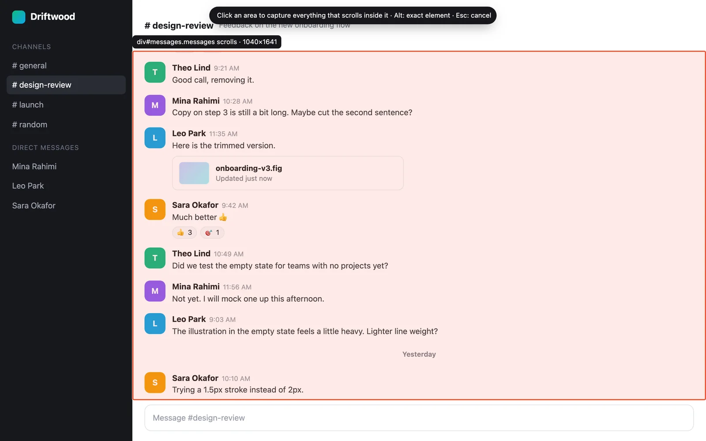
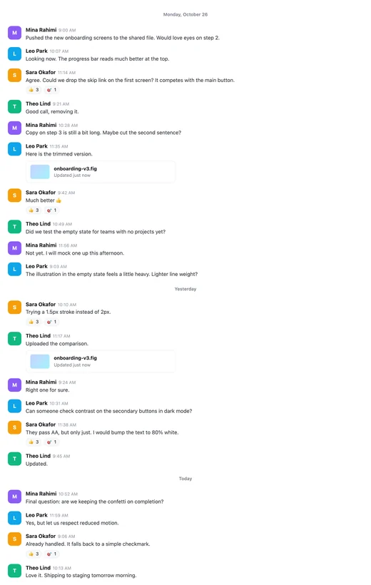
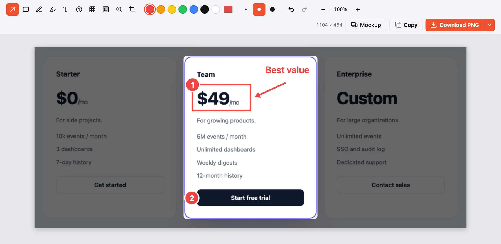
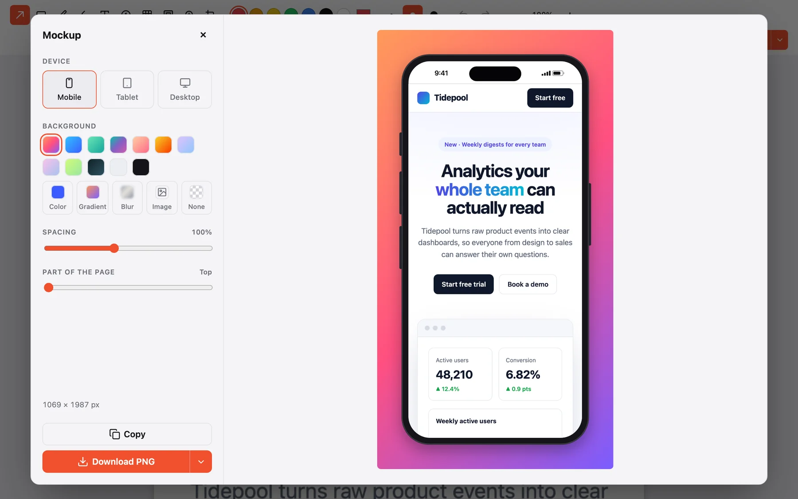
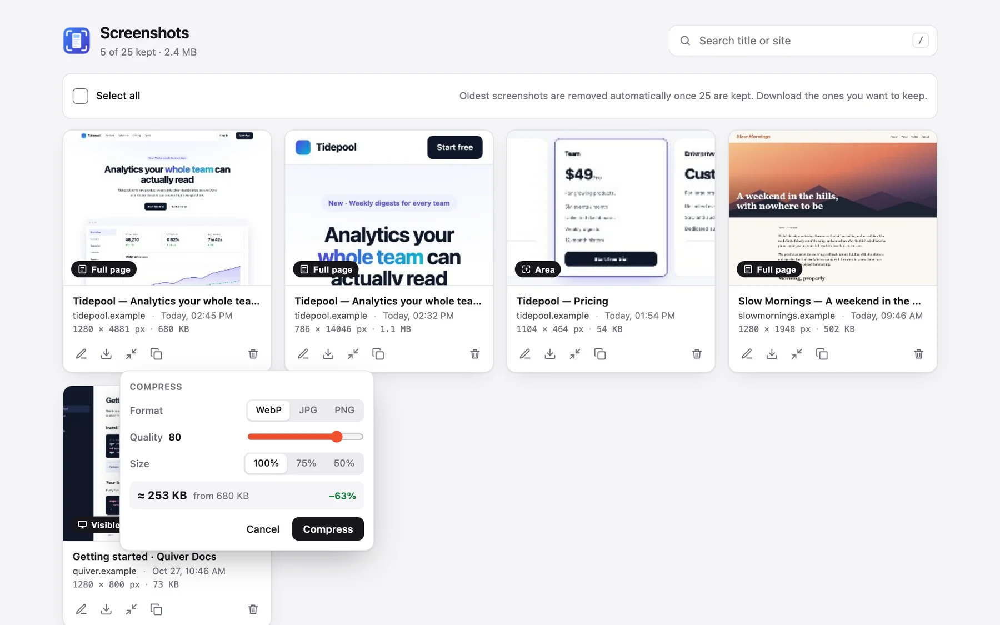

The whole page. One image.
Full Page Screenshot scrolls the page for you, waits for images to load, and stitches everything into one sharp screenshot. Then mark it up, frame it, and export it.

Capture
Pick what to capture, then click once
Choose a mode in the popup, or use the keyboard shortcut to capture the full page right away.
- Full page
- The whole scrollable page, without repeated sticky headers or chat bubbles.
- Visible
- Exactly what is on screen right now.
- Area
- Drag a rectangle or snap to an element, then set an exact size.
- Element
- Everything inside a scrolling panel, like a chat or a feed.

Area & element
Or just the part you need
Select a region with handles and exact pixel sizes, or click a panel that scrolls on its own to get all of its content.



1040 × 1641Edit
Point out what matters before you share
Every capture opens in an editor. Blur emails and names, number the steps, and crop to the part that counts.

Mockups
Put it in a phone, tablet or browser
Pick a frame and a background: a color, a gradient, a blur of the screenshot, your own image, or none. Ready for slides, docs and posts.

Gallery & export
Your last 25 screenshots, one click away
Search by title or site, compress large files with a live size preview, and download as PNG, JPEG, WebP or one PDF. The gallery, popup and editor follow your light or dark theme.

Privacy
Your screenshots never leave your computer
The extension makes no network requests. Captures are saved in your browser only.
Nothing to sign up for, no analytics, no ads.
It reads a page only after you start a capture on it.
Questions
Good to know
Why does Chrome say the extension "started debugging this browser"?
To capture beyond the visible screen at full quality and to render tablet or mobile layouts, the extension uses Chrome's DevTools protocol on the tab you're capturing. Chrome shows that bar whenever this happens. The extension disconnects as soon as the capture is done.
Are there pages it can't capture?
Chrome doesn't let extensions capture its own pages, such as chrome:// settings pages and the Chrome Web Store. Every regular website works. If DevTools is open on the tab, close it first.
Where are my screenshots saved?
In your browser, inside the extension's own storage. The 25 most recent are kept. Download the ones you want to keep for good, or delete any of them yourself.
Some images are missing from my capture. What can I do?
The extension waits for images and fonts before capturing and shows what's still loading. On very slow pages, wait for that progress to finish instead of pressing Capture now.
Can I change the keyboard shortcut?
Yes. Open the popup and click the keyboard icon, or go to chrome://extensions/shortcuts.